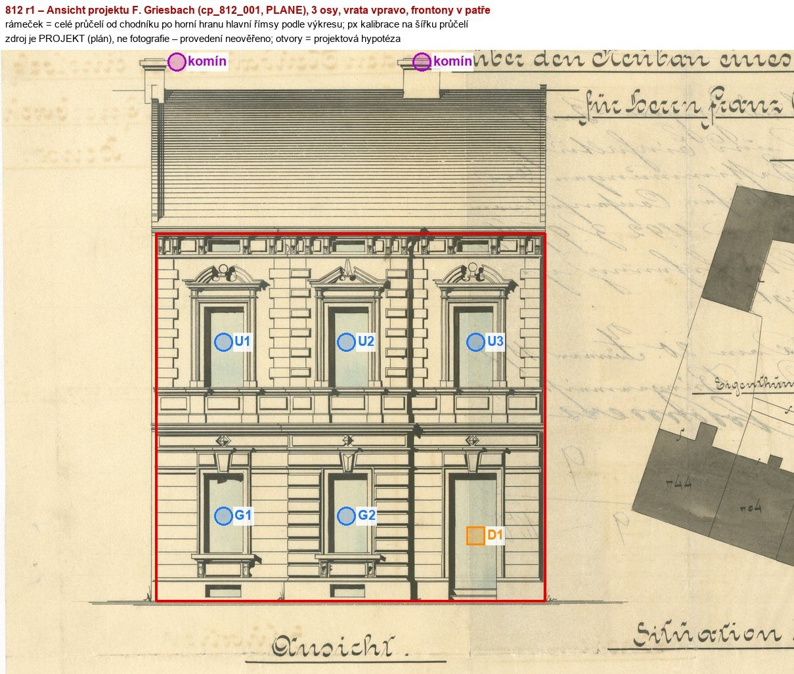
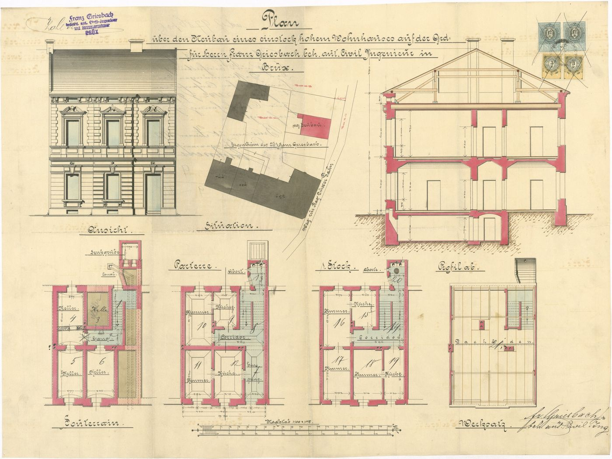
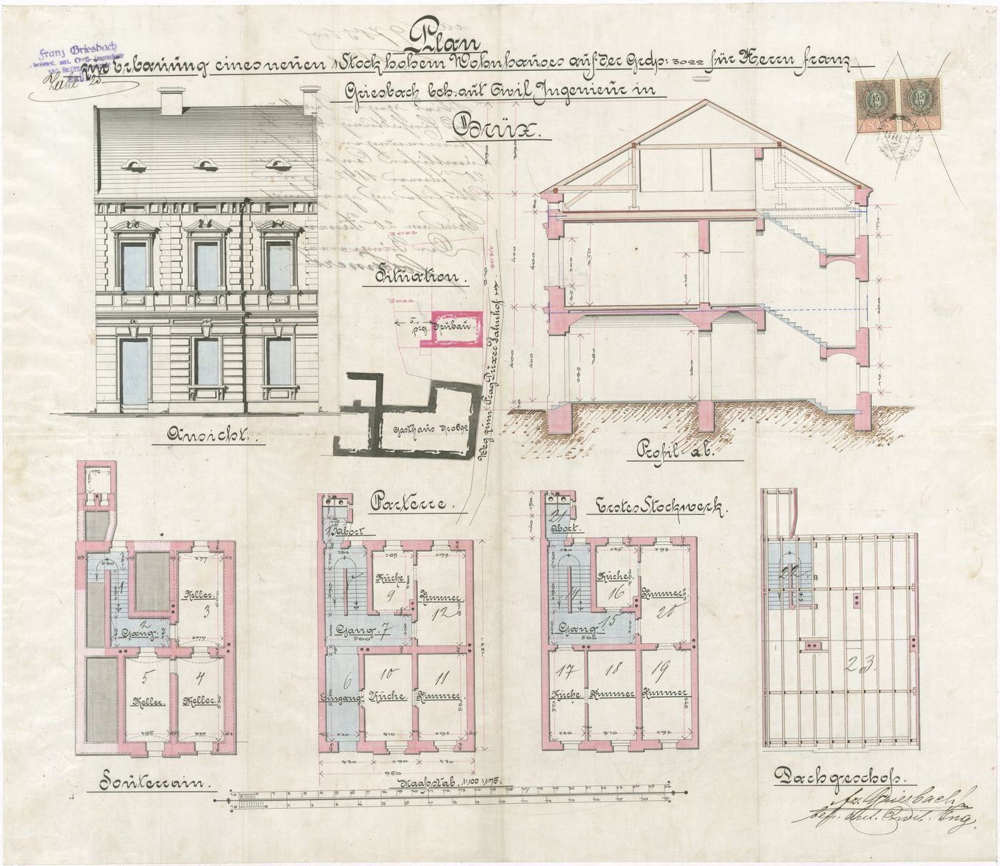

Identita domu
Upozornění – projektová hypotéza: Dům je doložen jen stavebním projektem (plán), ne fotografií; provedení ani dochovaný stav v 60. letech nejsou ověřeny.
Řadový jednopatrový dům se třemi osami, vraty vpravo a frontony nad okny patra podle projektu F. Griesbacha (90. léta 19. století).
Použité prameny: projekt (stavební plán), fotografie domu neexistuje: cp_812_001 a cp_812_002.
Kde je dům na pramenech
Dům je v červeném rámečku, každý počítaný otvor nese ID z plánu modelu; sousedé jsou popsáni čísly. U domů jen z projektu je rámeček na výkresu pohledu.


Přílohy v databázi (2)
Všechny přílohy struktury 812 v databázi Libuše, načtené 23. 10. 2026 (jen čtení) a otevřené. Kliknutím otevřete větší náhled.


plán / výkres
SHA-256 26aa796f8bb6…


plán / výkres
SHA-256 58fae7f2eaa2…
Geometrie
Upozornění – projektová hypotéza: Dům je doložen jen stavebním projektem (plán), ne fotografií; provedení ani dochovaný stav v 60. letech nejsou ověřeny.
| Revize geometrie | r3 |
|---|---|
| Poloha | GIS půdorys id 1213 (ulice Rudolfova) |
| Šířka průčelí | 9,50 m |
| Výška okapu | 8,99 m |
| Podlaží | 2 |
| Střecha podle pramenů | sedlová, hřeben podél ulice, 2 komíny |
| Otvory / vikýře | 6 / 0 |
| Polygonů | 327 |
| Kontrola podkroví a střechy (brána) | prošla: vlasové zásahy 3, nekryté zdivo 0,00 m², střecha nad prázdnem 0,00 m²; fasáda: passed |
Otvory po fasádách (facade_evidence)
| Fasáda | Okna po podlažích | Dveře | Počítané | Hypotéza | Pramen | Poznámka |
|---|---|---|---|---|---|---|
| main | [2, 3] | 1 | 6 | 0 | plan | počty a polohy z projektového výkresu (Ansicht); žádná fotografie domu – projektová hypotéza |
Kontrolní pohledy


Textury
bez textur (hypotéza – jen prosté materiály)
Až Codex dodá texturovaný model, objeví se v prohlížeči nahoře volba Textury (Codex).
Hypotézy
Upozornění – projektová hypotéza: Dům je doložen jen stavebním projektem (plán), ne fotografií; provedení ani dochovaný stav v 60. letech nejsou ověřeny.
Vše níže je model_hypothesis, provisional, locked: false.
- dum dolozen jen projektem 1888-1898 - provedeni, pozdejsi upravy ani stav v 60. letech nejsou overeny
- hloubka hlavniho traktu 12.0 m a dvorni pristavek (schody/zachody) 2.3 x 3.0 m zjednoduseny podle pudorysu
- bosaz prizemi, vlys s konzolami pod rimsou a sambrany = textura
Soubory
- Geometrie čp. 812, GLB
- Pracovní model: F:\MOST\output\rudolfova_street_claude_2026-10-23\houses\cp812\r3\cp_812_G_r3.blend
- Plán modelu: F:\MOST\output\rudolfova_street_claude_2026-10-23\houses\cp812\geometry_plan.json